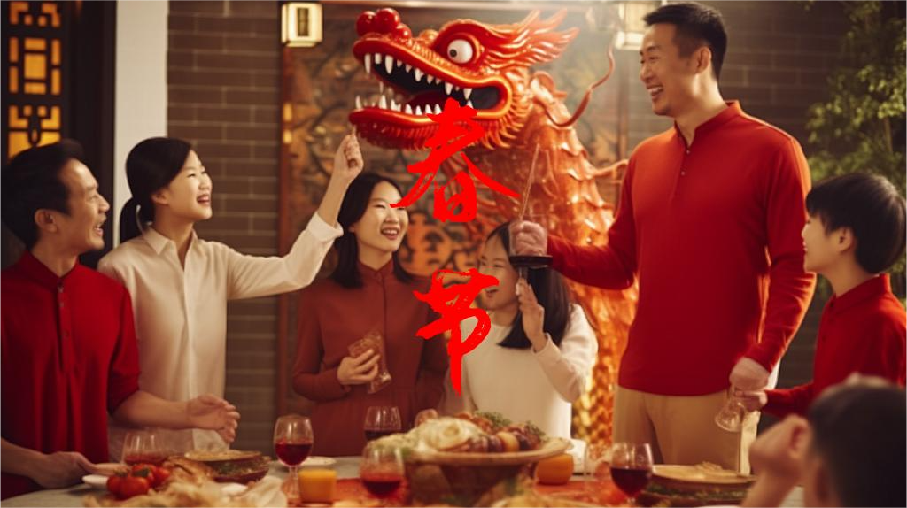
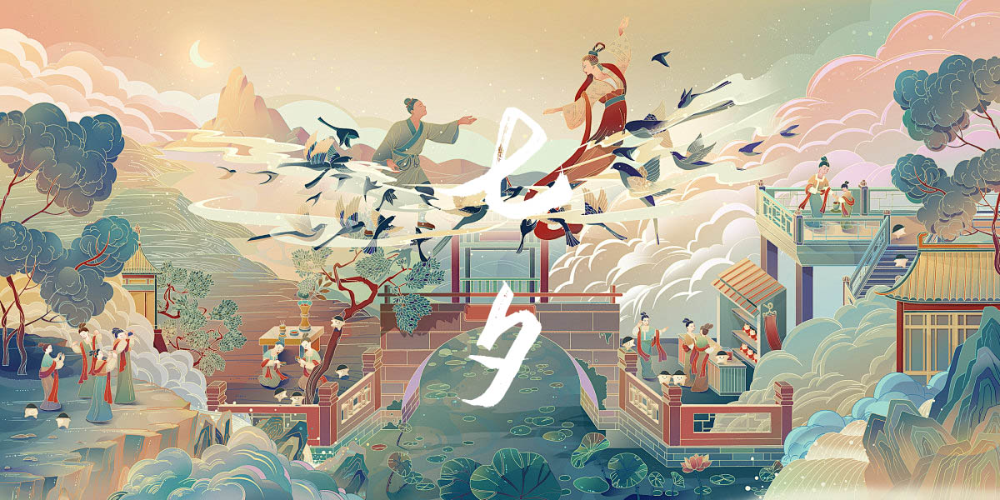
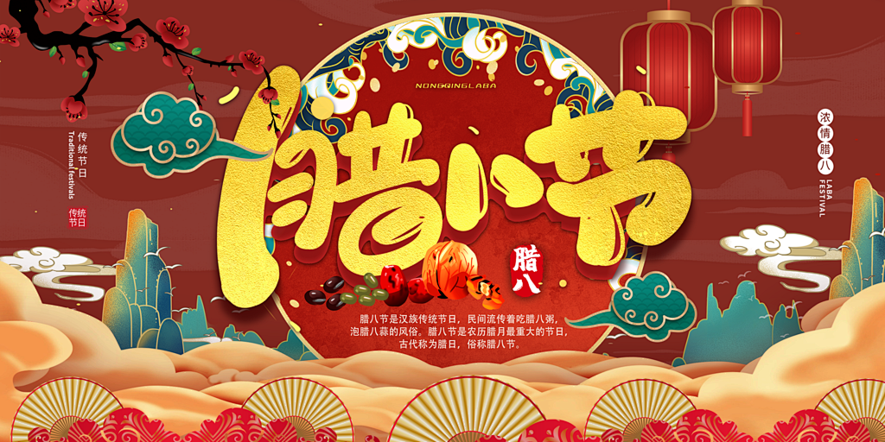

中国传统节日—节日习俗
春节
春节:是中国最重要的传统节日，人们会进行一系列的庆祝活动，如贴春联、挂灯笼、吃年夜饭、放鞭炮、拜年等，以迎接新的一年，祈求好运和幸福。
元宵节
元宵节:也叫上元节。这一天人们会吃元宵、赏花灯、猜灯谜，象征着团圆和喜庆。
清明节
清明节:是祭祖和扫墓的日子。人们会前往祖先的墓地，清扫、献花、祭奠，表达对逝者的思念和敬意。
端午节
端午节:有吃粽子、赛龙舟、挂艾草等习俗，纪念爱国诗人屈原。
七夕节
七夕节，是中国民间的传统节日。七夕节由星宿崇拜衍化而来，为传统意义上的七姐诞，因拜祭“七姐”活动在七月七晩上举行，故名“七夕”。拜七姐，祈福许愿、乞求巧艺、坐看牵牛织女星、祈祷姻缘、储七夕水等，是七夕的传统习俗。
中元节
中元节：民间俗称“鬼节”，人们会举行祭祀活动，如放河灯、烧包、面塑等，以安顿鬼魂。此外，还有一些禁忌，如勿夜游、勿喊名字等。
中秋节
农历八月十五是中秋节，人们会赏月、吃月饼、赠送礼品，寓意团圆和幸福。
腊八节
腊八节:喝腊八粥,这是腊八节最主要的习俗，由多种食材熬制而成，不同地区的腊八粥用料有所不同。泡腊八蒜：把大蒜瓣泡在醋中，到了过年的时候，蒜泡成了翠绿色，吃饺子时就着腊八蒜，别有一番风味。祭祀祖先和神灵：祈求丰收和吉祥。
冬至

兼具自然与人文两大内涵，既是二十四节气中一个重要的节气，也是中国民间的传统节日。冬至是四时八节之一，被视为冬季的大节日，在古代民间有“冬至大如年”的讲法。在中国南方地区，有冬至祭祖、宴饮的习俗。在中国北方地区，每年冬至日有吃饺子的习俗。
重阳节

农历九月初九是重阳节，古时民间在重阳节有登高祈福、秋游赏菊、佩插茱萸、拜神祭祖及饮宴祈寿等习俗。传承至今，又添加了敬老等内涵。
除夕节
为岁末的最后一天夜晚。岁末的最后一天称为“岁除”，意为旧岁至此而除，另换新岁。除，即去除之意；夕，指夜晚。“除夕”是岁除之夜的意思，又称大年夜、除夕夜、除夜等，时值年尾的最后一个晚上。除夕是除旧布新、阖家团圆、祭祀祖先的日子。
龙抬头
龙抬头：又称春耕节、农事节、青龙节、春龙节等，是中国民间传统节日。“龙”指的是二十八宿中的东方苍龙七宿星象，每岁仲春卯月（斗指正东）之初，“龙角星”就从东方地平线上升起，故称“龙抬头”。在农耕文化中，“龙抬头”标示着阳气生发，雨水增多，万物生机盎然，春耕由此开始。自古以来人们亦将龙抬头日作为一个祈求风调雨顺、驱邪攘灾、纳祥转运的日子。